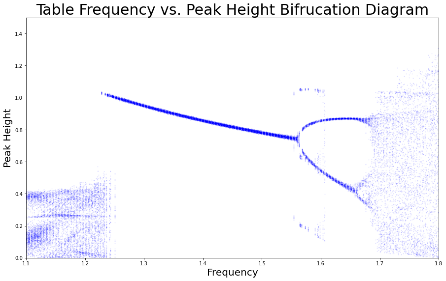
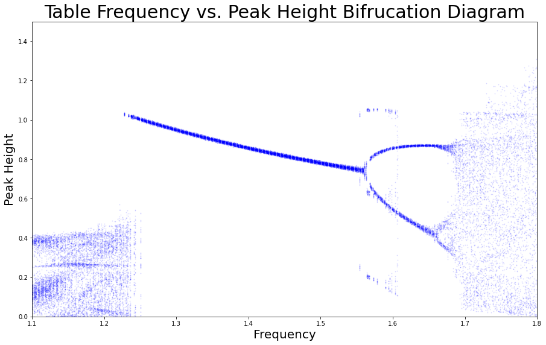

Interactive Simulation
Here is a simple simulation of the bouncing ball written in JavaScript. Feel free to play around with the frequency and observe the different regimes shown in the bifurcation diagrams.
Overview
For a computational physics final project, a friend and I investigated the mechanics of a ball bouncing on an oscillating table. By varying parameters and plotting peak successive peak bounce heights, we can observe period doubling bifurcation. We expanded on the classical example by adding support for different oscillation functions, triangle-shaped for example.
Methods
A ball and table system were simulated in Python, and ball height was tracked in an array. When a ball's future position were to be below the table's position in the next time step, the ball would bounce off with added energy from the table, subtracted by a restitution factor set to 0.8. Since our oscillation functions are well-behaved, evaluating instantaneous velocities was simple.
We used Euler integration as opposed to Verlet or Runge-Kutta methods to save on runtime; the numerical instability of Euler integration would be exhibited in a gradual accumulation of energy given a perfectly elastic collision. In our case, this effect is countered by the coefficient of restitution, and the runtime improvements of euler integration were worth the slight decrease in accuracy.
We investigated the effect of table frequency on long-term peak heights. We let the simulation the run for a specified time before tracking peak heights with scipy's peak finding functions to allow the ball to fall into a stable (or chaotic) regime, and heights were plotted against table oscillation frequency, which resulted in clear bifurcation diagrams.
In the sinusoidally oscillating table case, there were three regimes we identified. First, when the oscillation frequency was low, the table did not impart enough energy into the ball, and tended to "hug" the table. In the median frequency ranges, the ball followed period-doubling bifurcation, with peak heights falling into a stable pattern of heights. Higher frequencies resulted in chaotic behavior. Interestingly, there are some transient structures reminiscent of bifrucation themselves appearing in the 1.55 to 1.6 Hz range.
In the triangularly oscillating table case, we observed a similar regime in the low Hz range as in the sinusoidal case, though with some apparent transient structure. Above this regime, there are emergent structures of consistent bounce heights, followed by a chaotic regime. As we further increase table oscillation frequency, the pattern seems to repeat itself again; though with less clarity as numerical errors add up presumably.
For more information, see our video presentation here.
Future Work
To further expand on this project, I would like to explicitly compare the numerical error from euler integration to alternative methods, to determine if my intuition was correct. There are also analytical methods of simulating the ball height and exact collision locations. Additionally, bifurcation diagrams on different parameters other than just table frequency would be interesting to investigate.
Technologies / Skills
Python (numpy, scipy), Computational Physics, JavaScript